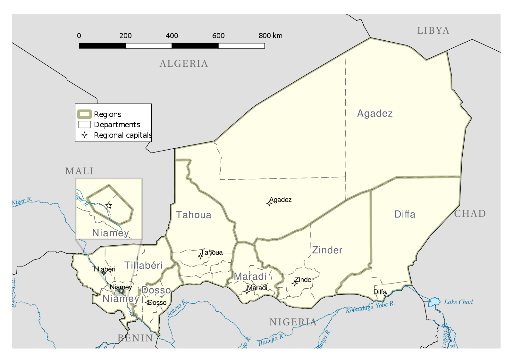
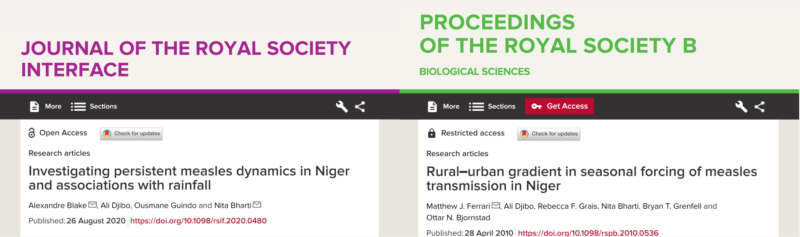
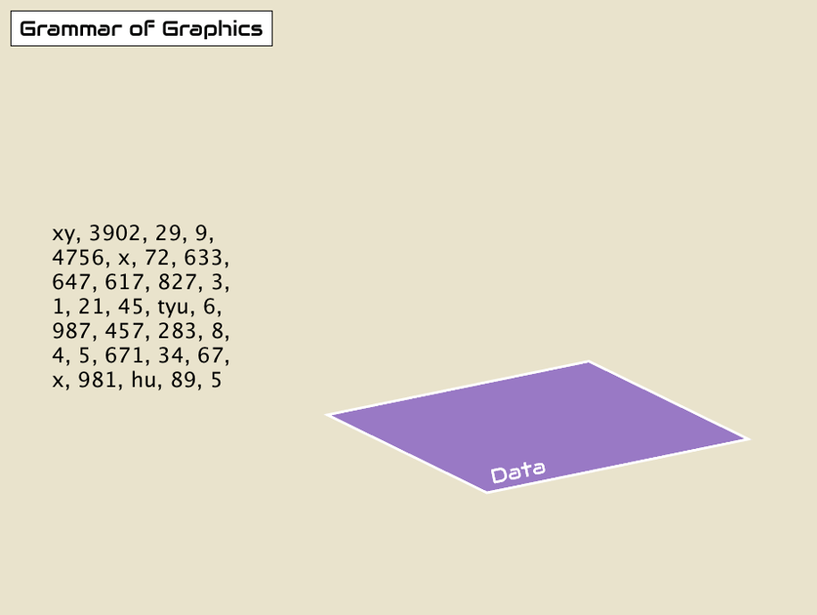
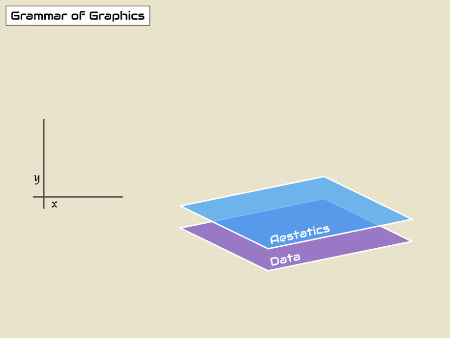
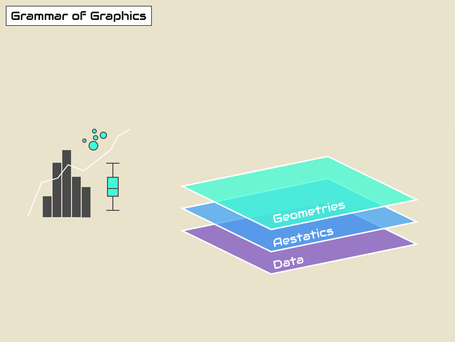
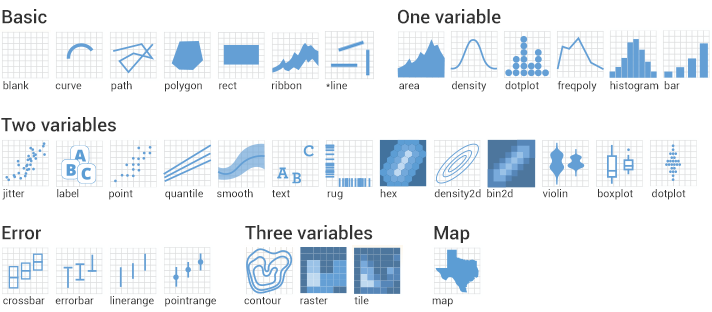
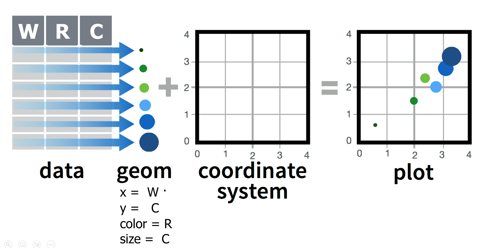

## Load packages
pacman::p_load(tidyverse,
here)Introduction to ggplot2
Introduction
Welcome to The SI Analytics’ Data Visualization course!
We will focus on learning how to use the {ggplot2} package to produce high quality visualizations in R.

Let’s dive in!
Learning objectives
By the end of this lesson you should be able to:
Recall and explain how the {ggplot2} package for data visualization is based on a theoretical framework called the grammar of graphics.
Name and describe the 3 essential components required for building a graph: data, aesthetics, and geometries.
Write code to build a complete
ggplotgraphic by correctly supplying the 3 essential layers to theggplot()function.Create different types of plots such as scatter plots, line graphs, and bar graphs.
Add or modify visual elements of a plot such as color and size.
Distinguish between between aesthetic mappings and fixed aesthetics, and how to apply them.

Packages
The {tidyverse} meta package includes {ggplot2}, so we don’t need to add it separately. The {here} package will help us correctly reference file paths.
Measles outbreaks in Niger
In this lesson, we will explore patterns of measles outbreaks in Niger.
Measles is a highly infectious virus spread by airborne respiratory droplets.
[Slide presentation about geography]
Since it is transmitted through direct contact, population density is an important driver of measles dynamics.
The nigerm dataset
We will be creating plots with a dataset of weekly reported measles cases at the region level in Niger.
These data were collected by the Ministry of Health of Niger, from 1 Jan 1995 to 31 Dec 2005.
To get started, let’s first load the (preprocessed) data set:
## Import data frame to RStudio Environment
load(here::here("data/clean/nigerm_cases_rgn.RData"))Take a moment to browse through the data:
## Print Niger measles (nigerm) data frame
reactable::reactable(head(nigerm, 10))The nigerm data frame has 4 variables (or columns):
year: Calendar year (ranges from 1995 to 2005)week: Week of the year (ranges from 1 to 52)region: Region in which the cases were recorded (see figure below)cases: Number of measles cases reported

Several papers have investigated these trends, linking measles to human activity, migration, and seasonality.

These studies are much more complex than what we will do there, but let’s see if we can find any patterns even with basic exploratory data visualization.
We can get some information about patterns in this data by inspecting summary statistics given by the summary() function:
summary(nigerm)This gives us values for the maximum, minimum, and quartiles of each numeric variable, and the number of observations (rows) for each region. This is summary useful, but it omits a large amount information contained in the dataset.
Keep in mind that summary statistics can be highly misleading, and a simple plot can reveal a lot more.
The easiest and clearest way to analyze patterns from this dataset is to visualize it!
The best way to do this in R is with {ggplot2}. So let’s see how that works.
The layered Grammar of Graphics
The gg in ggplot is short for “grammar of graphics”, which is the data visualization philosophy that {ggplot2} is based on.
The grammar of graphics is a theoretical framework which deconstructs the process of producing a graph.
Think of how we construct and form sentences in written and spoken languages by combining different elements, like nouns, verbs, articles, subjects, objects, etc. We can’t just combine these elements in any arbitrary order; we must do so following a set of rules known as a linguistic grammar.
Similarly, the grammar of graphics (GG) defines a set of rules for constructing graphics by combining different types of elements, known as layers.

The three layers at the bottom of this figure - data, aesthetics, and geometries - are required for building any plot.
Let’s define what they mean:
data: the dataset containing the variables of interest.
aesthetics: things we can see that visually communicate information in our data.
geometry: the geometric shape used to represent data in a plot: points, lines, bars, etc.
You might be wondering why we wrote data, geom, and aes in a computer code type font. You’ll see very shortly that we use these terms in R code to represent GG layers.
Challenge
The terms and syntax used for ggplot functions, arguments, and layers can be hard to keep up with at first, but as you gain experience using these terms to make plots in R, you will become fluent in no time.
Working through the essential layers
In this section, we will work towards a first plot with {ggplot2}. It will be a scatter plot using data from nigerm.
For easier plotting in this lesson, we will use a smaller subsets of the nigerm data frame at a time.
First let’s create one called nigerm96, which only contains measles case data for the year 1996. Running the code below will create nigerm96 and add it to your RStudio Environment:
## Create nigerm96 data frame
nigerm96 <- nigerm %>%
filter(year == 1996) %>% # filter to only include rows from 1996
select(-year) # remove the year column
Reminder
The select() and filter() functions are part of the {dplyr} package for data manipulation, which is a core package of the {tidyverse}. These topics are covered in the Data Wrangling course. See The SI Analytics website for more.
Let’s look at our new dataframe, nigerm96:
## Print nigerm96
reactable::reactable(head(nigerm96, 20))Building a ggplot() in steps
Time to start building a ggplot in increments! We’ll do this by starting with a blank canvas and then adding one layer at a time.
Step 0: Call the ggplot() function
## Call the `ggplot()` function
ggplot()As you can see, this gives us nothing but a blank canvas. But not to worry, we’re about to add some more elements.
Step 1: Provide data
The first input we need to supply the ggplot() function is the data layer (i.e., a data frame), by filling in the data argument (data = DF_NAME):
## Data layer
ggplot(data = nigerm96) # what data to useThis gives us blank plot again, since we’ve only supplied one out of the three inputs required for a complete graphic. Next we need to assign variables to aesthetic mappings.
Step 2: Define the variables
What should we plot on our axes? Let’s say we want to make an epidemic time series plot. To do that, we plot time (in weeks) on the x-axis, and disease incidence (number of reported cases) on the y-axis. In ggplot-speak, we are mapping the variable cases to the x aesthetic, and week to the y aesthetic.
Let’s tell ggplot() which variables to to plot on the aesthetics layer with a mapping argument, using this syntax: mapping = aes(x = VAR1, y = VAR2).
## Aesthetics layer: x and y position
ggplot(data = nigerm96, # what data to use
mapping = aes( # supply a mapping in the form of an 'aesthetic'
x = week, # which variable to map onto the x-axis
y = cases)) # which variable to map onto the y-axisThere’s still no data plotted, but the axis scales, titles, and labels are present. The x-axis marks weeks of the year from 1 to 52, and the y-axis shows that the number of weekly reported cases per region ranges from 0 to around 2000.
The plot is still lacking the required geometry layer.
Key Point
aes() stands for aesthetics - things we can see. Variables are always inside the aes() function, which in return is inside a ggplot(). Take a moment to observe the double closing brackets )) - the first one belongs to aes(), the second one to ggplot().
Step 3: Specify which type of plot to create
Finally, we add a geometry layer using a geom_* function. This determines which geometric objects - or visual markers - should be used to map the data.
Since we are looking at the relationship of two numerical variables, it makes sense to use a scatter plot. The geometric objects used to represent data on scatter plots are points, and the geom_* function for scatter plots is conveniently named geom_point(). We’ll add this function as new layer using a + sign:
## Geometries layer: points
ggplot(data = nigerm96, # what data to use
mapping = aes( # define mapping
x = week, # which variable to map onto the x-axis
y = cases)) + # which variable to map onto the y-axis
geom_point() # add a geom of type `point` (for scatter plot)Points have been added, and this is now a complete scatter plot! There are 8 points per week, representing each of the 8 regions (but at this point we cannot tell which point is from which region).
Reminder
The aesthetic function is nested inside the ggplot() function, so be sure to close the brackets for both functions before adding the + sign for the geom_* function, or your code will not run correctly.
It’s your turn to practice plotting with ggplot()! For practice exercises in this lesson, you will be using a different subset of nigerm called nigerm04, which contains only data from the year 2004:
Plotting with a different set of data will also allow you to explore if the patterns we see for 1996 is also true for 2004.
Practice
Using the nigerm04 data frame, write ggplot code that will create a scatter plot displaying the relationship between cases on the y-axis and week on the x-axis.
Modifying the layers
Generally speaking, the grammar of graphics allows for a high degree of customization of plots and also a consistent framework for easily updating and modifying them.
We can tinker with our existing code to switch up the data, aesthetics, and geometry inputs supplied to ggplot(), and create variations of the original plot. In fact, you’ve already done this by changing the dataset from nigerm96 to nigerm04 in the practice question.
Similarly, the aesthetics and geometry inputs can also be changed to create different visualizations. In the next few sections we will take the scatter plot we built in the previous section, and make incremental changes to modify different elements of the original code.
Changing aesthetic mappings
We created a scatter plot of cases vs week for nigerm96 with this code:
ggplot(data = nigerm96,
mapping = aes(x = week,
y = cases)) +
geom_point()If we copy the same code and change just one thing - by replacing the x variable week (numerical) with region (categorical) - we get what’s called a strip plot:
ggplot(data = nigerm96,
mapping = aes(x = region, # change which variable to map on the x-axis
y = cases)) +
geom_point()While the y-axis values of the points are the same as before, their x-axis mappings have changed significantly. They are now mapped to 8 separate positions along the x-axis, each corresponding to a discrete category of the region variable.
Changing geom_* functions
Similarly, we can modify the geometry layer to create a different type of plot, while still using the same aesthetic mappings.

geom_* functions and geometric objects which you can use to visualize your data. Here are some examples of different types of geoms that can be used with ggplot().Let’s copy and paste the original scatter plot code once again, but this time we will replace the geom_* function instead of the x aesthetic. If we change geom_point() to geom_col(), we get a bar plot (sometimes called a column chart):
ggplot(data = nigerm96,
mapping = aes(x = week,
y = cases)) +
geom_col() # declare that we want a bar plotAgain, the rest of the code is still the same - we just changed the key word of the geom_* function. However, the plot is significantly different that either the scatter plot or the strip plot.
Notice that the y-axis has been rescaled. The height of each bar represents the cumulative number of weekly cases, i.e, the total number of cases reported from all eight regions that week, rather than showing 8 separate data points for each region.
Caution
Not all plot types are interchangeable. Using a geom_* function that is not compatible with the variables you defined in aes() will give you an error. For example, let’s replace geom_point() with geom_histogram() instead:
ggplot(data = nigerm96,
mapping = aes(x = week,
y = cases)) +
geom_histogram()This is because a histogram shows the distribution of one numerical variable. ggplot() can’t map two variables to both the x and y-axis positions with a histogram, so it throws an error.
Practice
Use the nigerm04 data frame to create a bar plot of weekly cases with the geom_col() function. Map cases on the y-axis and week on the x-axis.
Additional aesthetic mappings inside aes()
So far, we have only mapped variables to the x and y aesthetic attributes. We can also map variables to other aesthetics like color, size, or shape.

ggplot graphics.Let’s return to our original scatter plot (cases vs week):
ggplot(data = nigerm96,
mapping = aes(x = week,
y = cases)) +
geom_point()There are other aesthetics we can add, like color or size.

Pro Tip
To see the full list of aesthetics that can be used with a particular geom_* function look it up the function documentation. You can do this by pressing F1 on a function, e.g., geom_point() to open the Help tab, and scroll down to the “Aesthetics” section. If F1 is hard to summon on your keyboard, type and run ?geom_point in your Console tab.
Let’s add color to our scatter plot. We can map the categorical variable region to the color aesthetic. We can do this by modifying the original code to add a new argument inside mapping = aes(). Let’s see what happens when we add color = region inside aes():
ggplot(data = nigerm96,
mapping = aes(x = week,
y = cases,
color = region)) + # use a different color for each region
geom_point() Now we have a colorful scatter plot! Each point is colored according to the region it belongs to. This allows us to better distinguish between regions.
Note that ggplot() automatically provides a color legend on the left.
Side Note
The colors are from {ggplot2}’s default rainbow color palette. In later lessons we will learn how to customize color scales and palettes, including making figures colorblind-friendly.
By examining the color patterns in the plot, you can make out the classic bell-shaped epidemic curves showing a rise and fall in measles incidence in each region.
Zinder had the largest number of cases and the steepest epidemic curve, followed by Maradi and Niamey.
While the colorful plot provides more insight into measles patterns at the regional level than the scatter plot with no color mapping, this graph still looks busy and is not the most intuitive to read. A different plot type could help with this.
Next we will try a bar plot, then a line graph.
Let’s try the same color = region aesthetic mapping with geom_col() instead:
ggplot(data = nigerm96,
mapping = aes(x = week,
y = cases,
color = region)) + # use a different outline color for each region
geom_col()This gives us a stacked bar plot, where the bars are divided into smaller sections. This shows us the proportional contribution of individual regions (i.e., the height or length of each subsection represents how much each region contributes to the total number of cases that week).
The stacked bar plot here is outlined by color. This is because the color aesthetic in {ggplot2} generally refers to the border around a shape. This did not apply to the default shapes in our scatter plot created with geom_point() because they are solid dots (not hollow), but you can see that it does apply to the bars in a bar chart created geom_col(). However, the grey filling is not very pretty.
We might want to color the inside of the bars instead. This is done by mapping our variable to the fill aesthetic. We can copy the code above and simply change color to fill inside aes():
ggplot(data = nigerm96,
mapping = aes(x = week,
y = cases,
fill = region)) + # use a different fill color for each region
geom_col()Voila! The inside of the bars are now filled with colors.
Now practice using the color aesthetic mapping with a new plot type: line graphs. Line graphs are generally considered one of the best plot types for time series data.
Practice
Use the nigerm04 data frame to create a line graph of weekly cases, colored by region. Map cases on the y-axis, week on the x-axis, and region to color. The geom_* function for a line graph is called geom_line().
Fixed aesthetics outside aes()
It is very important to understand the difference between aesthetic mappings and fixed aesthetics. The main aesthetics in ggplot are: x, y, color, fill, and size, and any of these could be either a mapping or a fixed value. This depends on whether they appear inside or outside the aes() function.
When we apply an aesthetic to modify the geometric objects according to a variable (e.g., the color of points changes according to the region variable), that’s an aesthetic mapping. This must always be defined inside mapping = aes(), like we just did in previous examples.
But if you want to apply a visual modification to all the geometric objects evenly (e.g., manually change the color of all points to be one color), that’s a fixed aesthetic. We must set fixed aesthetics to a constant value outside mapping = aes() and directly inside the geom_* function - e.g., geom_point(color = "COLOR_NAME").
Here let’s change the color of all the points in our scatter plot to blue:
ggplot(data = nigerm96,
mapping = aes(x = week,
y = cases)) +
geom_point(color = "blue") # use the same color for all pointsThis colors each point with the same R color (“blue”). In this plot, the color aesthetic does not represent any values from the data frame. Note that the color names in R are character strings, so it needs to go inside quotation marks.
Side Note
If you’re curious, run colors() in your console to see all possible choice of colors in R! To find out exactly how many options that is, try running colors() %>% length().
Now let’s add a fixed aesthetic called size. The default line width used by geom_line() is 0.5 mm, which looks like this:
ggplot(data = nigerm96,
mapping = aes(x = week,
y = cases,
color = region)) +
geom_line()To make all of the lines in our figure a little thicker, let’s fix this aesthetic at 1 mm. We do this by adding size = 1 inside the geom_line() function:
ggplot(data = nigerm96,
mapping = aes(x = week,
y = cases,
color = region)) +
geom_line(size = 1)All the lines in the plot have been made thicker, and the line width is set to a constant value of 1 mm. Note that here the value of size is numeric, so it should not be in quotation marks.
Watch Out
Remember that fixed aesthetics are manually set to constant value (as opposed to a variable from the data), and goes directly in the geom_* function, not inside aes(). If you try to put a fixed aesthetic in aes(), you might get a weird result. For example, let’s try moving the size = 1 aesthetic from geom_line() to aes() to see how it can go wrong:
ggplot(data = nigerm96,
mapping = aes(x = week,
y = cases,
color = region,
size = 1)) + # INCORRECT placement
geom_line()aes() is a mapping function that modifies plots based on variables from the data. Since there is no variable called “1” in the nigerm96 data frame, aes() cannot process or map this aesthetic correctly.
Practice using fill as a fixed aesthetic for a bar plot.
Practice
Use the nigerm04 data frame to create a bar graph of weekly cases, and fill all bars with the same color. Map cases on the y-axis, week on the x-axis, and fix the color aesthetic of the bars to the R color “hotpink”.
Additional GG layers
In this lesson, we kept things simple and only worked with the three required layers. As you start to delve deeper into plotting with {ggplot2}, you’ll start to encounter the other layers more frequently.
Soon you’ll be able to create more complex plots, like this one:
Recap
To build a complete ggplot, you must first supply a data frame using the data argument of ggplot(), and define variables and map them to aesthetics inside aes() using the mapping argument of ggplot(). Then start a new layer with a + sign and specify the type of plot you want using an appropriate geom_* function. You can copy this code template and adapt it to create different ggplot graphics:
ggplot(data = DF_NAME,
mapping = aes(AES1 = VAR1,
AES2 = VAR2,
AES3 = VAR3,
...)) +
geom_FUCNTION()Learning outcomes
You can recall and explain how the {ggplot2} package for data visualization is based on a theoretical framework called the grammar of graphics.
You can name and describe the 3 essential layers for building a graph: data, aesthetics, and geometries.
You can write code to build a complete
ggplotgraphic by correctly supplying the 3 essential layers to theggplot()function.You can create different types of plots such as scatter plots, line graphs, and bar graphs.
You can add or modify aesthetics of a plot such as the color, and size.
References
Some material in this lesson was adapted from the following sources:
Blake, Alexandre, Ali Djibo, Ousmane Guindo, and Nita Bharti. 2020. “Investigating Persistent Measles Dynamics in Niger and Associations with Rainfall.” Journal of The Royal Society Interface 17 (169): 20200480. https://doi.org/10.1098/rsif.2020.0480.
Cmprince.B Administrative divisions of Niger: Departments and Regions. 29 October 2017. Wikimedia Commons. Accessed October 14, 2022. https://commons.wikimedia.org/wiki/File:Niger_administrative_divisions.svg
DeBruine, Lisa, and Dale Barr. 2022. Chapter 3 Data Visualisation | Data Skills for Reproducible Research. https://psyteachr.github.io/reprores-v3/ggplot.html.
Franke, Michael. n.d. 6 Data Visualization | An Introduction to Data Analysis. Accessed October 12, 2022. https://michael-franke.github.io/intro-data-analysis/Chap-02-02-visualization.html.
Geography Now, dir. 2019. Geography Now! NIGER. https://www.youtube.com/watch?v=AHeq99pojLo.
Giroux-Bougard, Xavier, Maxwell Farrell, Amanda Winegardner, C tienne Low-Decarie and Monica Granados. 2020. Workshop 3: Introduction to Data Visualisation with Ggplot2. http://r.qcbs.ca/workshop03/book-en/.
Ismay, Chester, and Albert Y. Kim. 2022. A ModernDive into R and the Tidyverse. https://moderndive.com/.
Kabacoff, Rob. 2020. Data Visualization with R. https://rkabacoff.github.io/datavis/.
Lisa DeBruine. 2020. Basic Plots. https://www.youtube.com/watch?v=tOFQFPRgZ3M.
Pius, Ewen Harrison and Riinu. n.d. R for Health Data Science. Accessed October 11, 2022. https://argoshare.is.ed.ac.uk/healthyr_book/.
Prabhakaran, Selva. 2016. “How to Make Any Plot in Ggplot2? | Ggplot2 Tutorial.” 2016. http://r-statistics.co/ggplot2-Tutorial-With-R.html.
{kind=link}
Solutions
.SOLUTION_nigerm04_scatter()
.SOLUTION_nigerm04_bar()
.SOLUTION_nigerm04_line()
.SOLUTION_nigerm04_pinkbar()